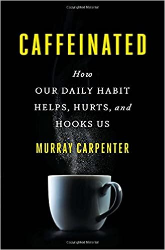

«На кофеине. Полезная вредная привычка», Мюррей Карпентер
Журналист, репортер на радио. Пишет о науке и быте для New York Times, the Boston Globe, Wired, National Geographic и других изданий. Автор множества статей о кофе и кофеине.
О книге
Вспомните ваш сегодняшний день: сколько чашек кофе или чая вы выпили? А может, вы предпочитаете колу, шоколад или взбадриваете себя энергетиками?
Скорее всего, вы один из тех людей, которые и дня не могут прожить без нескольких доз кофеина. Но как часто вы задумываетесь о том, откуда он берется в наших продуктах и что происходит с организмом после порции эспрессо или колы?
Кофеин окружен множеством мифов. Действительно ли он стимулирует умственную деятельность и повышает спортивные результаты? Способствует ли развитию ожирения или излишней тревожности? И насколько на это влияет источник, из которого вы его получили?
Автор этой книги провел настоящее расследование и собрал информацию о кофеине - веществе, к которому мы привыкли и о котором при этом удивительно мало знаем. Мюррей Карпентер побывал на плантациях какао в Мексике, огромных заводах Китая и в исследовательских лабораториях США, чтобы выяснить, как наша полезная вредная привычка влияет.

О книге
| Автор |
Мюррей Карпентер |
| Год написания |
2017 г. |
| Жанр |
Размышления |
Отзывы
12.02.20 | 13:44
Книга - результат журналистского расследования, изложенный в виде наукообразной брошюры. Стиль изложения в этом издании примерно такой же, как у выходившей в советское время серии книг, посвященных популяризации науки. В определенных местах, являющихся по мнению автора инсайтом, автор делает круглые глаза и сопровождает его восхищенным текстом. Вполне возможно, что оригинальный текст еще более выразителен, оставим это на совести переводчика.
12.02.20 | 13:44
В целом, материал книги не содержит особых сенсаций, скорее он собрал объемные показатели потребления кофеина в том или ином виде. Многое притянуто, многое наоборот не использовано.
12.02.20 | 13:44
Автор, решил исследовать активное вещество кофеин в различных продуктах и на основе этого сделал вывод о его колоссальном использовании. С тем же успехом можно взять углеводороды в разных продуктах, свести их воедино, а потом ужасаться размерам потребления.
12.02.20 | 13:44
Такое впечатление, что это заказное издание, призванное оправдать выкачивание кофеина из чая и кофе, прежде чем они поступят потребителю. Вкусовые качества продаваемых ныне чая и кофе и так ухудшилось из-за того, что они содержат все меньше и меньше кофеина. Объемы выкачивания прямо и косвенно подтверждают факты, приведенные в издании. А книга должна оправдать дальнейшее снижение содержания в них кофеина.
12.02.20 | 13:44
Книгу можно почитать в качестве образца того, как делаются сенсации, плюс узнать некоторые особо не афишируемые факты. Покупать можно при наличии большой скидки или получить в качестве подарка.